Steps to Create a CronJob for Maintenance on OpenShift
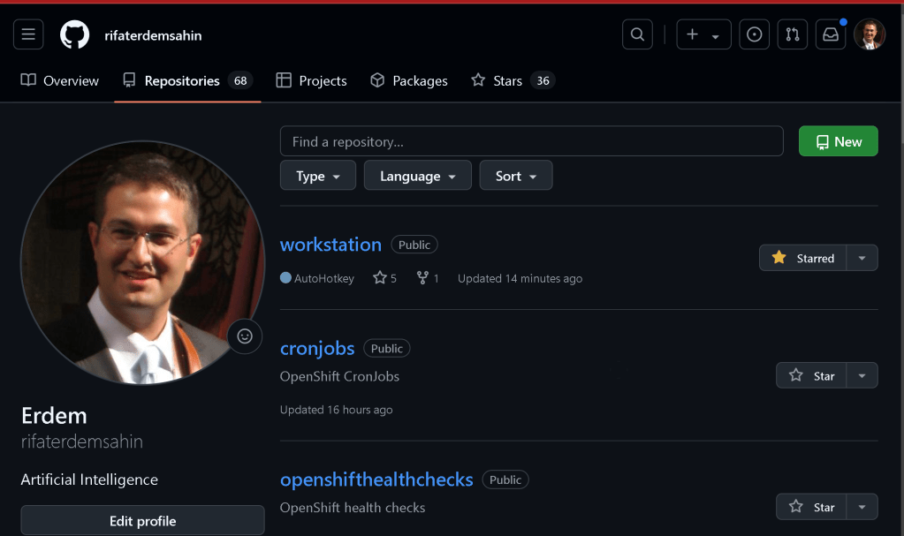
Creating a Proof of Concept (PoC) for CronJobs on OpenShift involves setting up automated tasks to perform maintenance activities at scheduled intervals. CronJobs in OpenShift are used to run Kubernetes jobs on a time-based schedule, similar to cron jobs in Unix-like operating systems.
restart from github
https://github.com/rifaterdemsahin/cronjobs/tree/main
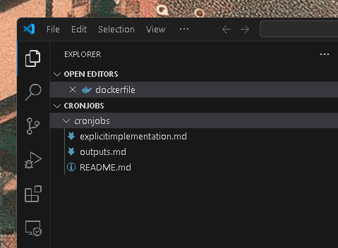
Here’s a step-by-step guide to create a CronJob for maintenance tasks:
1. Log in to Your OpenShift Cluster
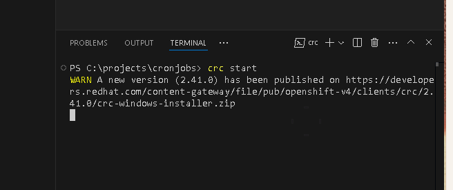
First, ensure you are logged in to your OpenShift cluster using the oc command-line tool.
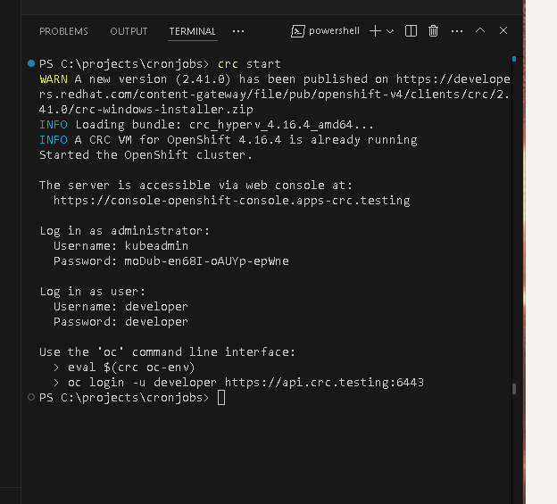
oc login --server=https://your-openshift-cluster-url:port
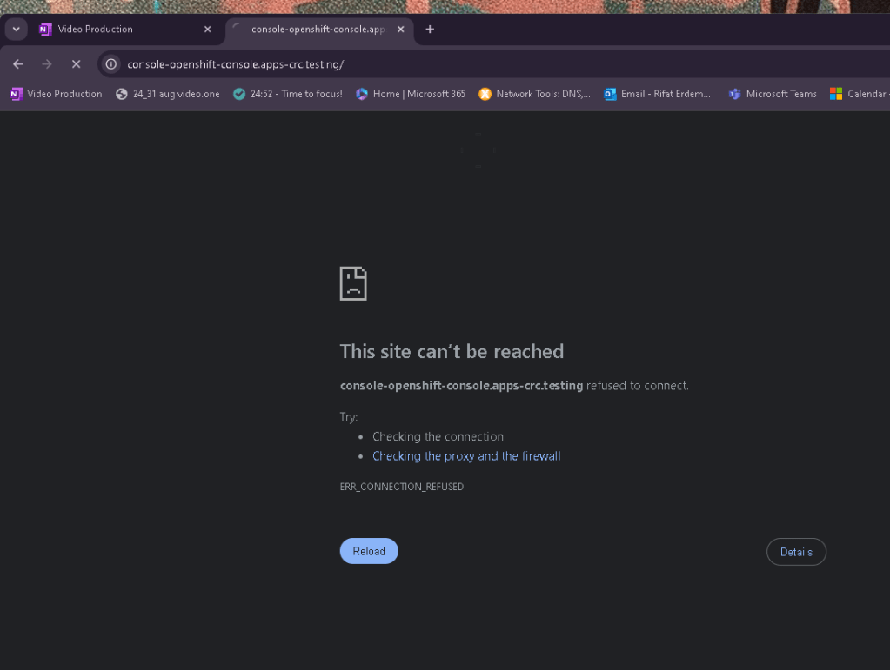
Stop start
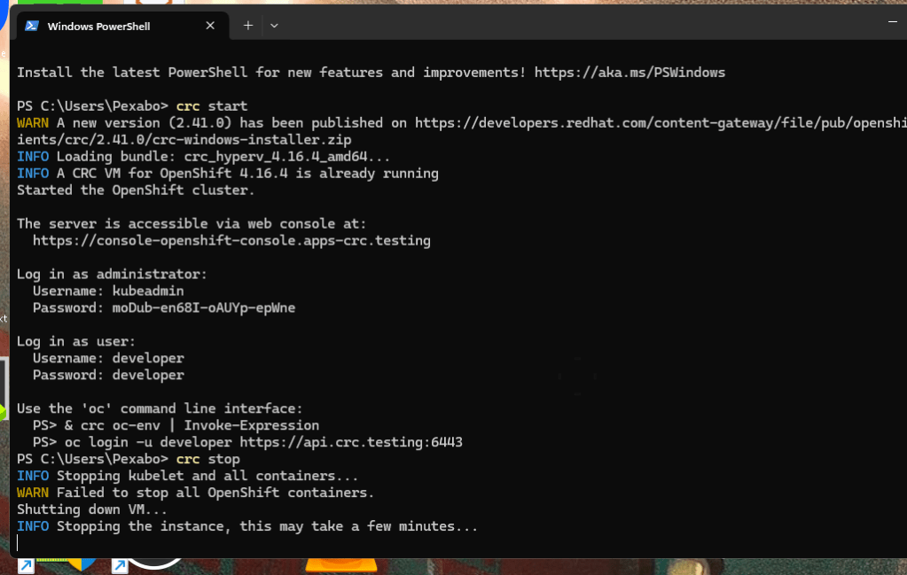
now more logs coming on
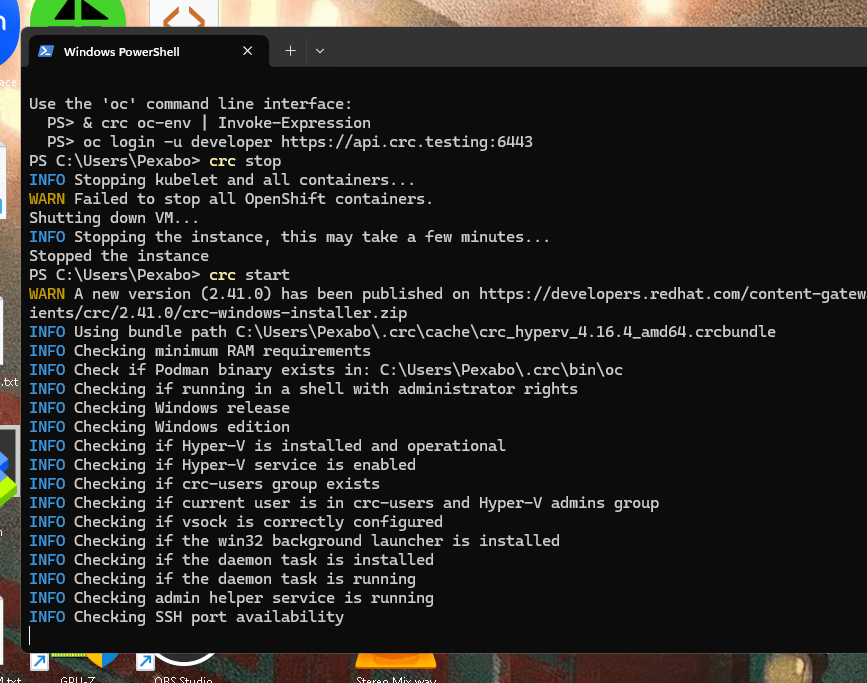
now logged in
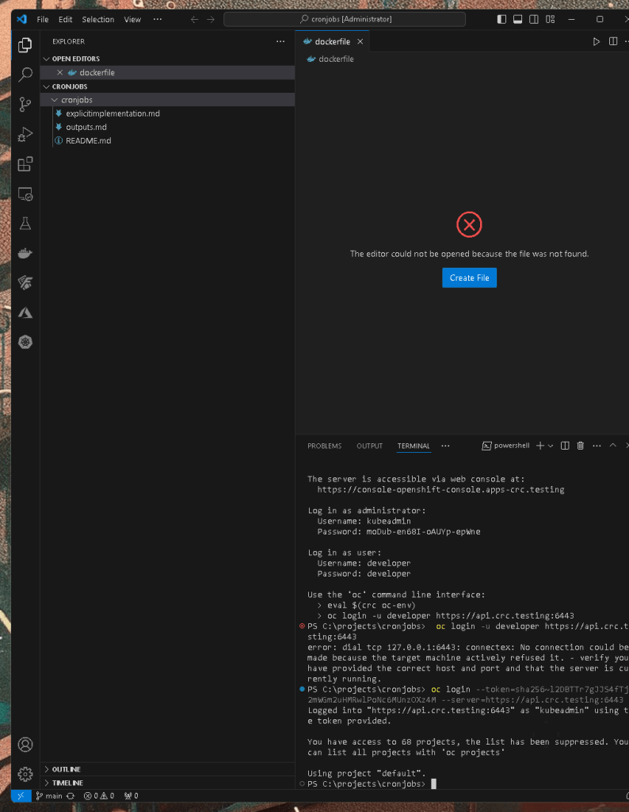
2. Create a New Project or Use an Existing One
You can create a new project (namespace) or use an existing one to deploy your CronJob.
oc new-project maintenance-cronjobs
or use an existing project
oc project existing-project
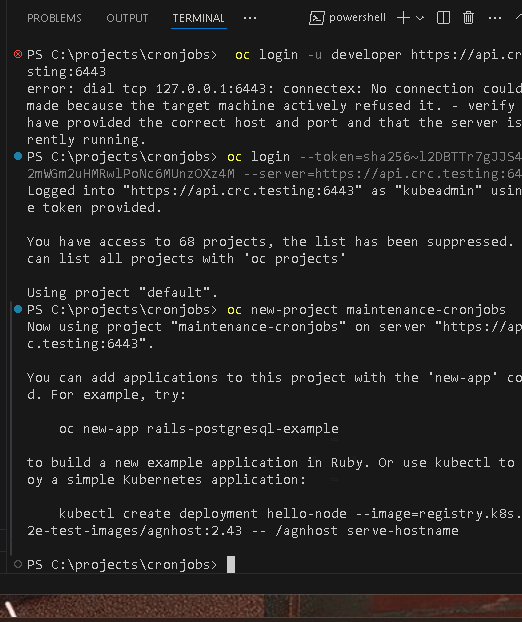
it is not here
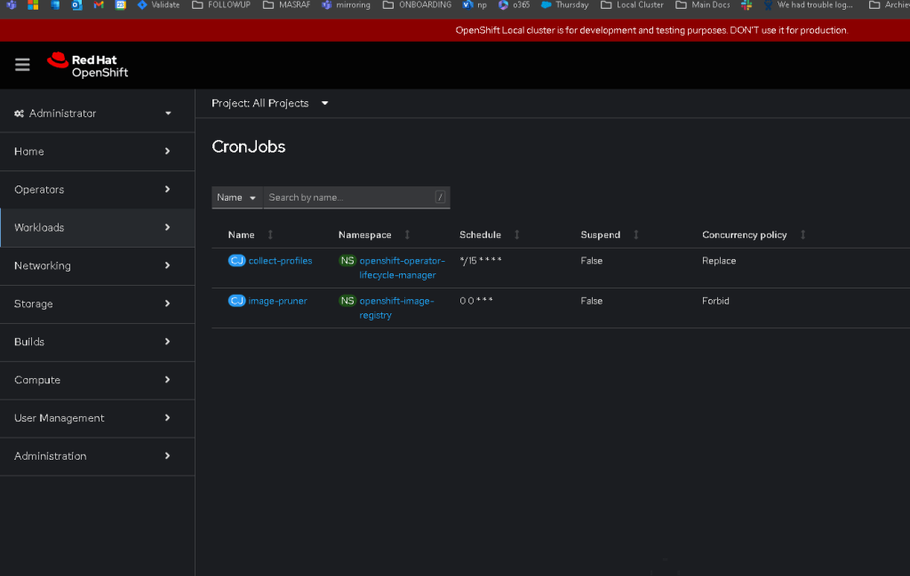
3. Define the CronJob YAML File
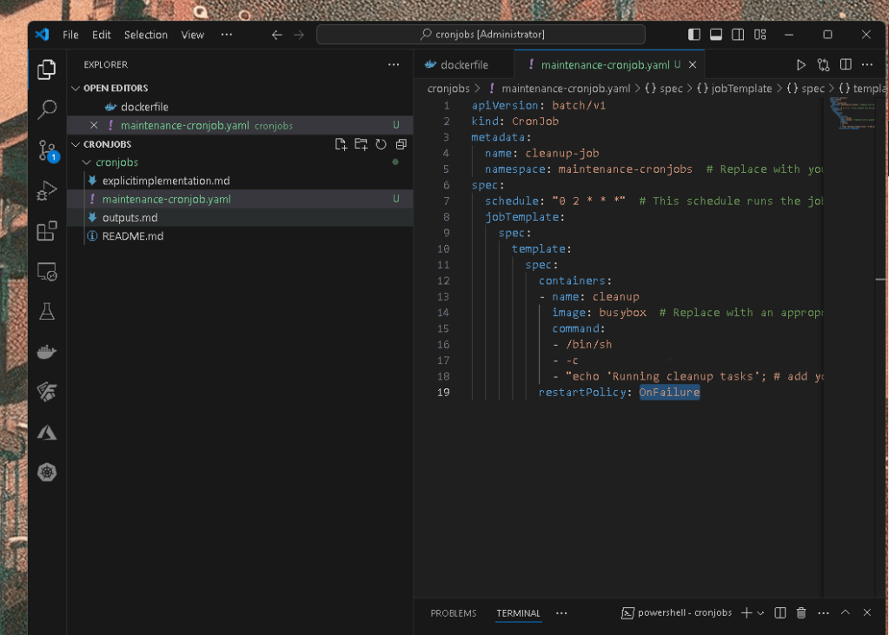
Create a YAML file to define the CronJob. This file specifies the schedule, the container image to use, and the task to perform. Here’s an example YAML file named maintenance-cronjob.yaml:
apiVersion: batch/v1
kind: CronJob
metadata:
name: cleanup-job
namespace: maintenance-cronjobs # Replace with your namespace
spec:
schedule: "0 2 * * *" # This schedule runs the job at 2:00 AM every day
jobTemplate:
spec:
template:
spec:
containers:
- name: cleanup
image: busybox # Replace with an appropriate image
command:
- /bin/sh
- -c
- "echo 'Running cleanup tasks'; # add your cleanup commands here"
restartPolicy: OnFailure
-
schedule: Specifies the cron expression for the job’s schedule. The example"0 2 * * *"means the job will run daily at 2:00 AM. -
containers: Defines the container that runs your maintenance tasks. Thecommandfield specifies the commands to execute within the container. -
restartPolicy: Defines the job’s restart policy.OnFailuremeans the job will retry if it fails.
oc apply -f maintenance-cronjob.yaml
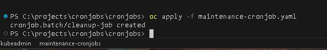
Cleanup job in here
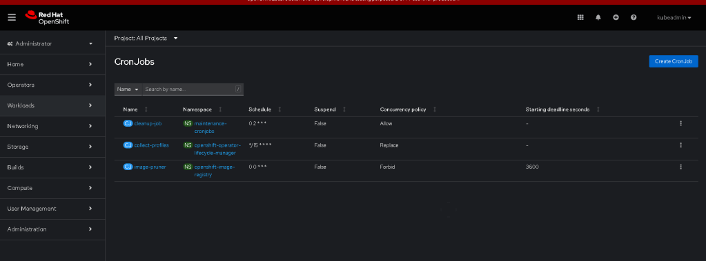
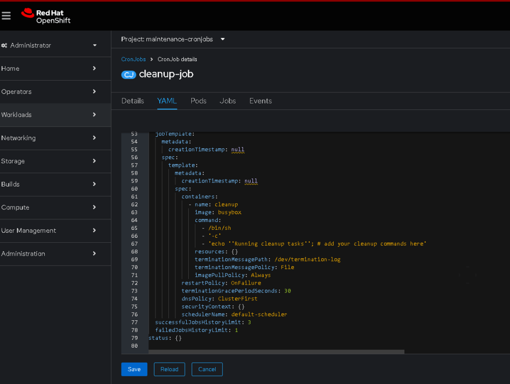
Start and End Update
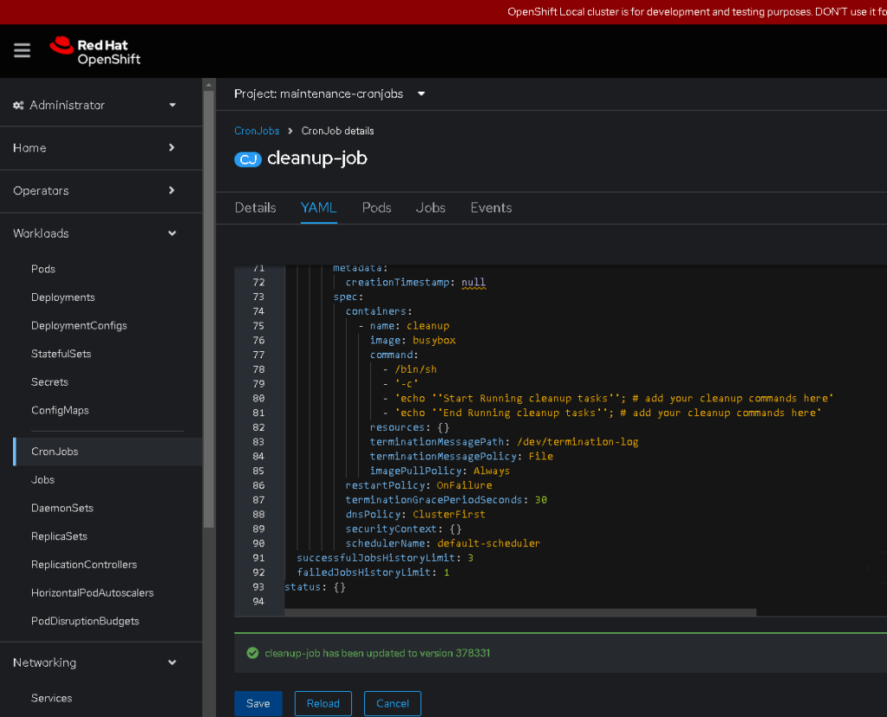
ToolBag Suggested By VSCode
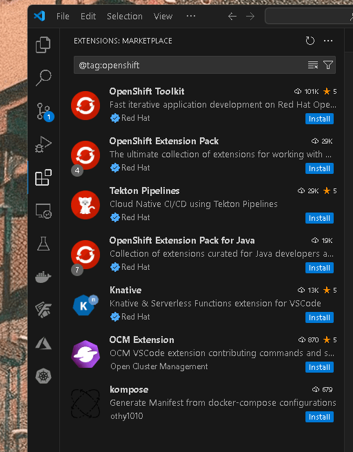
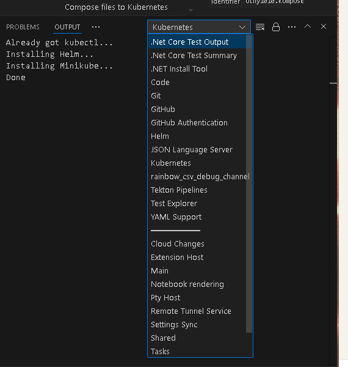
4. Apply the CronJob Configuration
Apply the CronJob configuration to your OpenShift cluster using the oc command:
oc apply -f maintenance-cronjob.yaml
Second run removes my line in yaml and goes back to original yaml
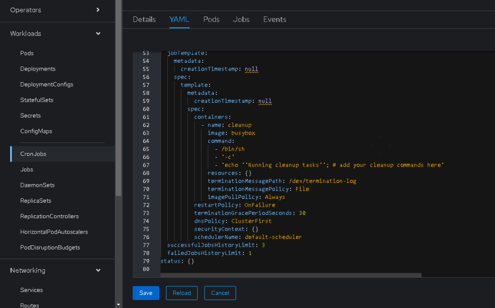
5. Verify the CronJob Creation
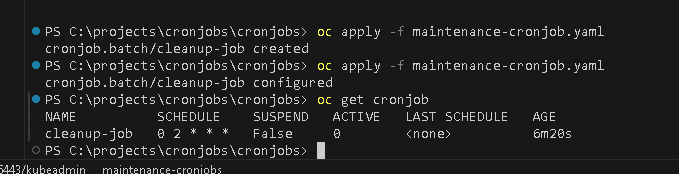
Check if the CronJob is created and scheduled correctly:
oc get cronjob
You should see output similar to this:
NAME SCHEDULE SUSPEND ACTIVE LAST SCHEDULE AGE
cleanup-job 0 2 * * * False 0
Parellel Jobs
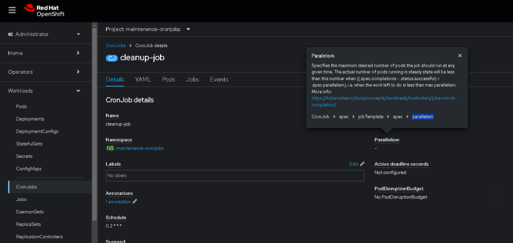
6. Monitor CronJob Execution
To monitor the execution of your CronJob, you can check the status of the Jobs created by the CronJob:
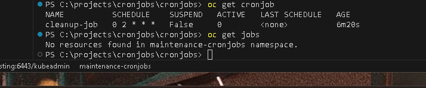
oc get jobs
For detailed logs of a specific job:
oc logs job/
7. Edit or Update the CronJob
If you need to update the CronJob (e.g., change the schedule or modify the commands), edit the YAML file and reapply it:
oc apply -f maintenance-cronjob.yaml
8. Suspend or Delete the CronJob
To temporarily disable (suspend) the CronJob:
oc patch cronjob cleanup-job -p '{"spec" : {"suspend" : true }}'
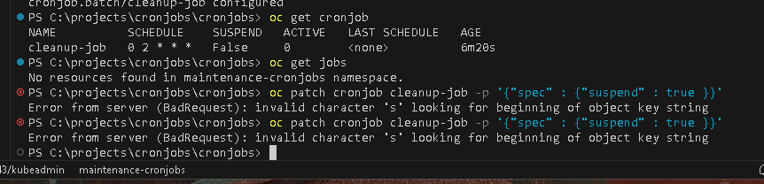
Based on the CronJob YAML you provided, it seems that you are trying to patch the suspend field to true using the oc patch command. However, you encountered errors due to improper JSON formatting or PowerShell syntax issues.
To successfully suspend the cron job using the oc patch command, follow these steps to ensure the JSON is formatted correctly and recognized by the command:
Correct Command for PowerShell
In PowerShell, use single quotes around the JSON payload to avoid needing to escape double quotes inside the JSON string:
oc patch cronjob cleanup-job -n maintenance-cronjobs -p '{"spec": {"suspend": true}}'
Explanation:
-
Single Quotes: Using single quotes around the JSON avoids issues with escape characters in PowerShell.
-
Namespace: Make sure to include the namespace (
-n maintenance-cronjobs) in your command since yourCronJobis in themaintenance-cronjobsnamespace. Without specifying the namespace, the command defaults to the current namespace, which may not be where your cron job is located.
Alternative Using kubectl/oc in PowerShell with Escape Characters
If you prefer to use double quotes around the JSON string, ensure to escape properly in PowerShell:
oc patch cronjob cleanup-job -n maintenance-cronjobs -p "{\"spec\": {\"suspend\": true}}"
Steps to Apply the Patch:
-
Open PowerShell: Make sure you're running PowerShell where your
oc(OpenShift CLI) orkubectl(Kubernetes CLI) is configured. -
Run the Correct Command: Copy and paste one of the commands above into your PowerShell window.
-
Verify: Once the command is successfully executed, verify that the cron job is suspended by running:
oc get cronjob cleanup-job -n maintenance-cronjobs -o yaml
Look for the suspend field in the output. It should be set to true.
By using the correct syntax and including the namespace, your oc patch command should execute without errors, successfully suspending the cron job.
To delete the CronJob:
oc delete cronjob cleanup-job
Example Maintenance Tasks
Here are some typical maintenance tasks you might want to automate using CronJobs:
-
Cleaning Up Old Logs: Rotate and delete old logs to save disk space.
-
Database Backups: Automate database backups and transfer them to a secure storage location.
-
Resource Cleanup: Delete unused resources (like completed pods or old images) to free up cluster resources.
-
Health Checks and Reports: Run periodic health checks and generate reports for monitoring purposes.
Conclusion
Using CronJobs in OpenShift is a powerful way to automate routine maintenance tasks. By defining your tasks in a YAML file and applying it to your cluster, you can ensure regular execution of these tasks with minimal manual intervention. This setup can significantly enhance the management and stability of your OpenShift environment.
Imported from rifaterdemsahin.com · 2024